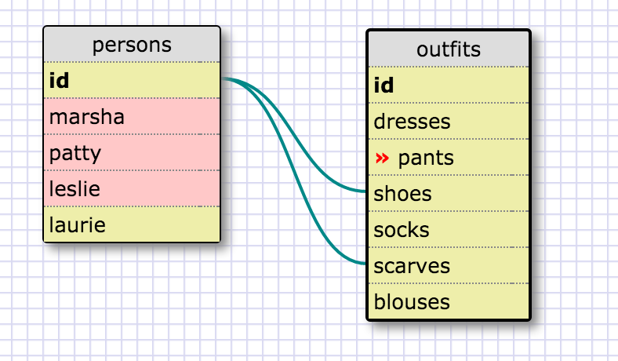
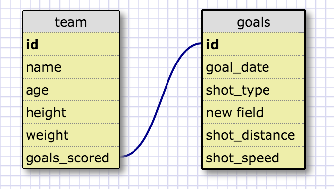
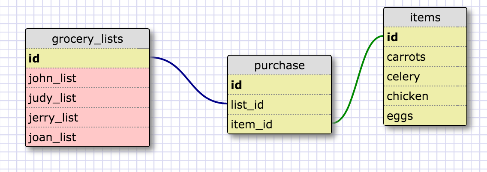
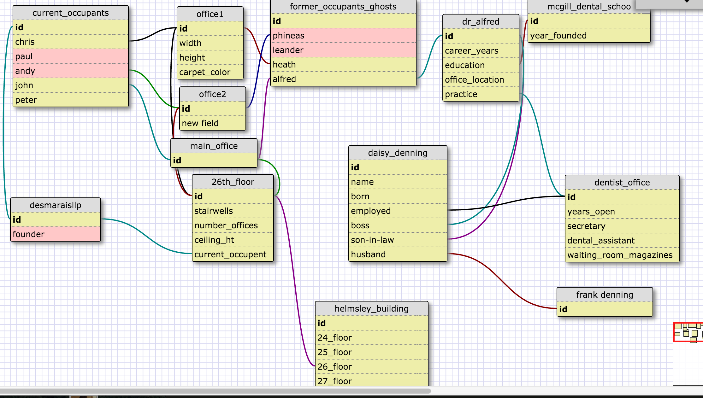

What is a one-to-one database? * a database that features the id's of 2 items which have a one-to-one relationship? because a one-to-one relationship occurs when 2 things have a single relationship to one another.
When would you use a one-to-one database? (Think generally, not in terms of the example you created). * to connect 2 things that have a single relationship to each other - in between these items in their respective databases perhaps?
What is a many-to-many database? * a database a database that features many different entities that have multiple relationships between them all
When would you use a many-to-many database? (Think generally, not in terms of the example you created). What is confusing about database schemas? What makes sense? * you would use a many to many database to reflect many things and multiple internal relationships. *data schemas rule - they make sense and their awesome visually



